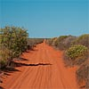
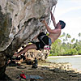
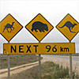
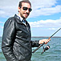
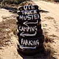

This page is the record of our journey around the world via Europe, the Mediterranean, Africa, Australia and South America. One day it may be dusted off to record more travels to distant lands.
Where are they?
This is an interactive map. You should click on it.
What are they doing?
- 2nd Jul: La Paz, El Ted and Karen
Eddie, or "El Ted" to his friends (and bar staff) has been travelling since before Jude and I set out on our big trip, but got stuck in one place (managing a bar in agodawfulvibrant backpacker's hostel) for long enough that we were able to track him down. more >> - 17th Jun: Things I've loved about Australia
It's 6am, and either the memory of entering the country in the same manner or perhaps the mild dementia brought about by pitting sleep depravation and caffeine against each other is making me all nostalgic for our trip. more >>  7th Jun: So long Sydney
7th Jun: So long Sydney
Our thoughts on leaving Sydney for the final time more >>- 29th Apr: Climbing in Railay Beach
We've been flexing our climbing muscles on Railay's gorgeous cliffs more >> - 24th Mar: Crossing the Nullarbor
The Nullarbor is big. You just won't believe how vastly, hugely, mind-bogglingly big it is. I mean, you may think it's a long way down the road to the chemist's, but that's just peanuts to the Nullarbor. more >> - 23rd Mar: The day I got hooked on fishing
After spending a day on the water with Rob and Judie I now totally get why people spend so much time fishing - it's addictive and tasty! more >> - 12th Mar: Real Australiana
So we were driving down the Eyre Peninsula when we saw a sign. It was an impassible obstacle in our path - at once an invitation and a challenge. There was no chance of driving past and ignoring it. more >> - 1st Mar: What exactly it is that I do all day
For the last few months I've been working at Imagination in Sydney, making some shiny multi-touch tables for GE. more >> - 29th Jan: Rafting on the Rangitata
We couldn't spend a week in the world's adventure sports capital without doing something silly so we decided to test ourselves by going white water rafting down the Rangitata river's grade 5 rapids. more >> - 29th Jan: Central Christchurch, one year after the earthquake
This is going to be a somewhat depressing post. But then again, central Christchurch is a somewhat depressing place right now. It'll lighten up towards the end though, I promise. more >>